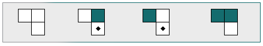
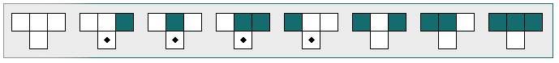

Zelluläre Automaten
Programmiere den Roboter:
Der Roboter soll die markierten Felder  färben.
färben.
Ein Feld ist markiert, wenn das Feld darüber gefärbt ist.
Ein Feld ist markiert, wenn das Feld darüber und das Feld links oben unterschiedlich sind.
Nur eines dieser Felder darf gefärbt sein.

Der Roboter muss 14-mal gehen, um alle markierten Felder zu färben.
Ob ein Feld markiert ist, hängt davon ab, welche der drei Felder oberhalb (links oben, oben und rechts oben) gefärbt sind.
Die zweite Regel bedeutet: Ein Feld ist markiert, wenn von den drei Feldern oberhalb nur das Feld rechts oben gefärbt ist.

Der Roboter muss 20-mal gehen, um nach ganz rechts zu kommen.
Der Roboter muss 10-mal gehen, um nach ganz unten zu kommen.
Weitere Hinweise:
Zum Beispiel bedeutet die erste Regel (von links): Ein Feld ist nicht markiert, wenn alle drei Felder oberhalb nicht gefärbt sind.Die zweite Regel bedeutet: Ein Feld ist markiert, wenn von den drei Feldern oberhalb nur das Feld rechts oben gefärbt ist.